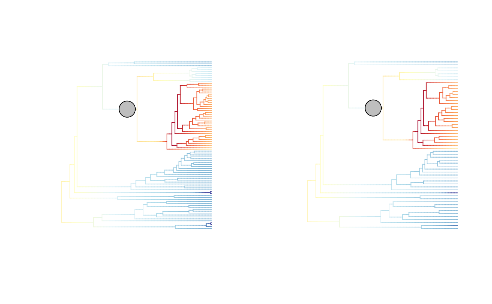
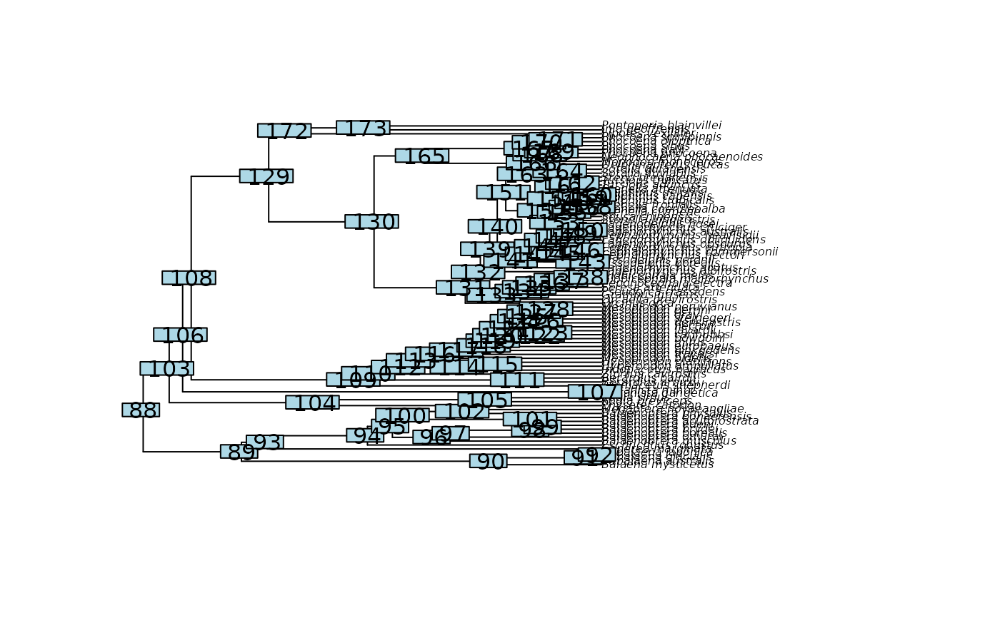
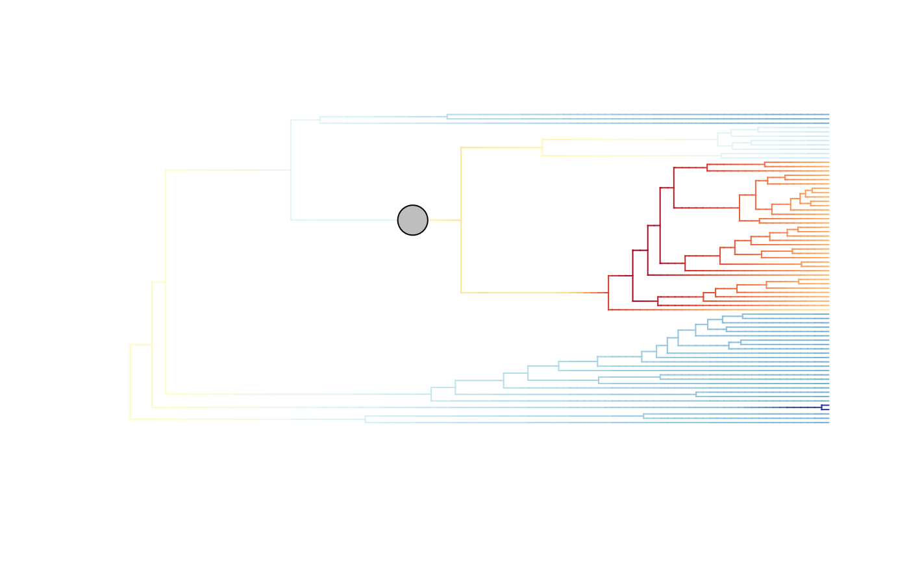
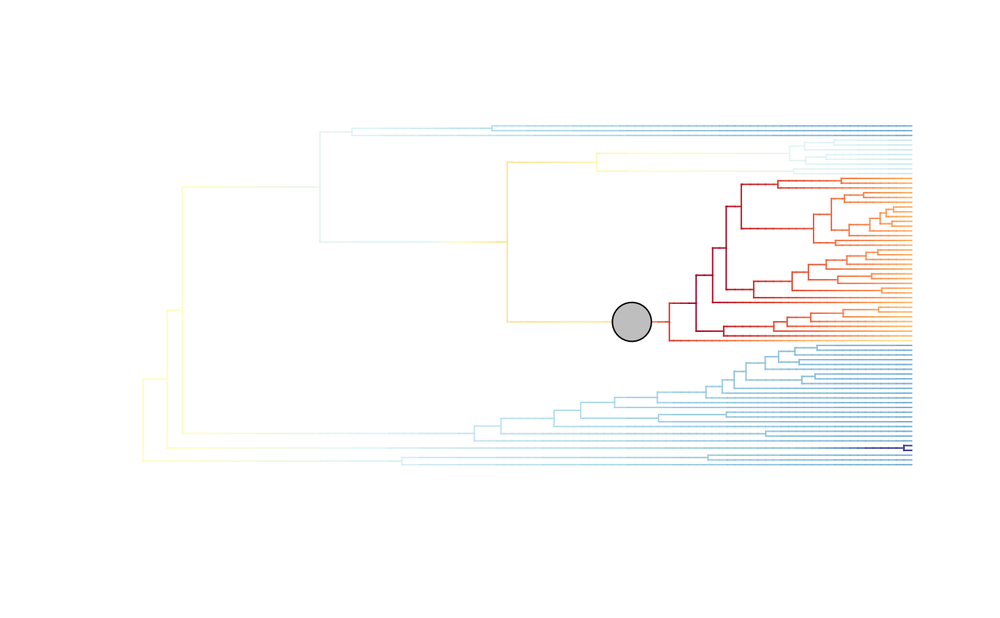

Prune a BAMM_object of class bammdata down to a subset of tips, and update all
internal elements so that the pruned object still describes the BAMM diversification dynamics,
including all deepSTRAPP elements, but only for the retained tips and branches.
The BAMM_object is typically generated directly with prepare_diversification_data()
or from external BAMM output files with build_BAMM_object().
This function is an extension of the original function BAMMtools::subtreeBAMM(), which is designed to extract a subclade.
However, this new function also accepts any arbitrary set of tips, whether or not it forms a monophyletic group.
When tips are removed, internal nodes that are left with no descendant are removed,
and internal nodes left with a single descendant are suppressed, their parent and child branches being merged into a single branch.
All BAMM elements are updated accordingly:
regime shifts located on removed branches are dropped,
regime shifts located on merged internal branches are re-attached to the new merged branch that contains them,
macroevolutionary regimes are re-indexed, and branch segments are rebuilt so that each merged branch carries all the regimes it went through.
This function also preserves and updates the additional deepSTRAPP elements:
the Marginal Shift Probability (MSP) = the probability of a regime shift to occur along each branch.
the Maximum A Posteriori probability (MAP) configurations among the posterior samples = the configurations of regime shifts that were sampled most frequently (See
BAMMtools::getBestShiftConfiguration()).the Maximum Shift Credibility (MSC) configurations among the posterior samples = the configurations of regime shift location with the highest product of marginal probabilities across branches (See
BAMMtools::maximumShiftCredibility()).
Pruning is intended to restrict a downstream deepSTRAPP analysis (e.g., to the taxa for which trait or range data are available) while keeping the diversification dynamics inferred on the full phylogeny.
If you need diversification rates estimated for a specific clade or set of taxa,
you should run a dedicated BAMM analysis on that subset with appropriate sampling fractions,
see prepare_diversification_data().
Usage
prune_BAMM_object(
BAMM_object,
tips_to_keep = NULL,
tips_to_prune = NULL,
MRCA_node = NULL,
recompute_shift_configurations = FALSE,
MAP_odds_ratio_threshold = 5,
verbose = FALSE
)Arguments
- BAMM_object
Object of class
"bammdata", typically generated withprepare_diversification_data()orbuild_BAMM_object(), that contains a phylogenetic tree and associated diversification rate mapping across selected posterior samples.- tips_to_keep
Character vector. Tips to retain in the pruned
BAMM_object, given as tip labels as found inBAMM_object$tip.label. Default =NULL.- tips_to_prune
Character vector. Tips to remove from the
BAMM_object, given as tip labels as found inBAMM_object$tip.label. Default =NULL.- MRCA_node
Integer. ID of a single internal node of
BAMM_object, as found inBAMM_object$edge, whose descendant branches/tips must be retained. Use it to focus on the diversification dynamics of one subclade, as inBAMMtools::subtreeBAMM(). Default =NULL.Exactly one of
tips_to_keep,tips_to_prune, andMRCA_nodemust be provided.- recompute_shift_configurations
Logical. Whether the MAP and MSC configurations must be detected again from the pruned posterior samples.
If
FALSE(default),$MAP_indicesand$MSC_indicesare left unchanged (pruning removes branches, not posterior samples, so those indices remain valid), and$MAP_BAMM_objectand$MSC_BAMM_objectare simply pruned along with the main object. Use this to keep the pruned object comparable with the analysis run on the full phylogeny.If
TRUE, the MAP and MSC configurations are detected again from the pruned posterior samples, as inbuild_BAMM_object(). Shifts located on removed branches no longer contribute, so the configurations retained as MAP/MSC may differ from those of the full phylogeny.
- MAP_odds_ratio_threshold
Numeric. Controls the definition of 'core-shifts' used to distinguish across configurations when fetching the MAP samples. Shifts that have an odds ratio of marginal posterior probability / prior lower than
MAP_odds_ratio_thresholdare ignored. SeeBAMMtools::getBestShiftConfiguration(). Only used whenrecompute_shift_configurations = TRUE. Default =5.- verbose
Logical. Whether to display progress in the console. Default =
FALSE.
Value
The function returns a BAMM_object of class "bammdata" which is a list with at least 26 elements.
Phylogeny-related elements used to plot a phylogeny with ape::plot.phylo():
$edgeInteger matrix. Defines the tree topology by providing rootward and tipward node ID of each edge.$NnodeInteger. Number of internal nodes.$tip.labelCharacter vector. Labels of all retained tips.$edge.lengthNumeric vector. Length of edges/branches. Branches resulting from the merging of several initial branches have a length equal to the sum of the lengths of the initial branches.$node.labelCharacter vector. Labels of all internal nodes. (Present only if present in the initialBAMM_object)
BAMM internal elements used for tree exploration updated for the new pruned tree:
$beginNumeric vector. Absolute time since root of edge/branch start (rootward).$endNumeric vector. Absolute time since root of edge/branch end (tipward).$downseqInteger vector. Order of node visits when using a pre-order tree traversal.$lastvisitID of the last node visited when starting from the node in the corresponding position in$downseq.
BAMM elements summarizing diversification data:
$numberEventsInteger vector. Number of events/macroevolutionary regimes (k+1) retained in each posterior configuration. k = number of shifts.$eventDataList of data.frames. One per posterior sample. Records shift events and macroevolutionary regime parameters. 1st line = Background root regime.$eventVectorsList of integer vectors. One per posterior sample. Record regime ID per branch.$tipStatesList of integer vectors. One per posterior sample. Record regime ID per tip. Tip vectors are named after the tips only when they were named in the initialBAMM_object: the naming convention of the input is preserved.$tipLambdaList of numeric vectors. One per posterior sample. Record speciation rates per tip.$tipMuList of numeric vectors. One per posterior sample. Record extinction rates per tip.$eventBranchSegsList of numeric matrices. One per posterior sample. Record regime ID per segment of branches.$meanTipLambdaNumeric vector. Mean tip speciation rates across all posterior configurations of tips.$meanTipMuNumeric vector. Mean tip extinction rates across all posterior configurations of tips.$typeCharacter string. Set the type of data modeled with BAMM. Should be "diversification".
Additional elements providing key information for downstream analyses:
$expectedNumberOfShiftsInteger. The expected number of regime shifts used to set the prior in BAMM.$MSP_treeObject of classphylo. List of 4 elements duplicating information from the Phylogeny-related elements above, except$MSP_tree$edge.lengthis recording the Marginal Shift Probability of each branch, recomputed on the pruned phylogeny.$MAP_indicesInteger vector. The indices of the Maximum A Posteriori probability (MAP) configurations among the posterior samples.$MAP_BAMM_objectList of 18 elements of class"bammdata"recording the mean rates and regime shift locations found across the Maximum A Posteriori probability (MAP) configurations, pruned to the retained tips.$MSC_indicesInteger vector. The indices of the Maximum Shift Credibility (MSC) configurations among the posterior samples.$MSC_BAMM_objectList of 18 elements of class"bammdata"recording the mean rates and regime shift locations found across the Maximum Shift Credibility (MSC) configurations, pruned to the retained tips.
Elements tracking the pruning, that can be used to relate the pruned object to the initial one:
$pruned_tip_labelsCharacter vector. Labels of the tips that were removed.$pruning_root_shiftNumeric. Time elapsed between the root of the initial phylogeny and the root of the pruned phylogeny. Equals0when the retained tips span the initial root. Since pruning does not change the distance of any retained node to the present, this is also the difference between the initial and the pruned root ages.$pruning_nodes_ID_dfData.frame with four columns providing the conversion table for node IDs:$new_node_ID,$initial_node_ID,$node_type("tip","root", or"internal"), and$node_label.$pruning_edges_ID_dfData.frame with four columns providing the conversion table for edge IDs:$new_edge_ID,$initial_edge_ID,$position_in_path(1= the most rootward initial edge merged into the new edge), and$nb_merged_edges. A new edge resulting from the merging of several initial edges holds several rows.
Details
Prune a BAMM_object down to a subset of tips, and update all
internal elements so that the pruned object still describes the BAMM diversification dynamics,
including all deepSTRAPP elements, but only for the retained tips and branches.
When the retained tips do not span the original root, the root of the pruned phylogeny becomes the
Most Recent Common Ancestor (MRCA) of the retained tips. The macroevolutionary regime that was governing
the branch subtending that MRCA becomes the new background/root regime, and its rate parameters are
re-anchored on the new root age (the rates occurring at any given time along the retained branches are unchanged,
only the time of reference at which the initial rates are recorded is shifted).
The time shift from the initial root age to the new MRCA age is recorded in $pruning_root_shift.
This function also preserves and updates the additional deepSTRAPP elements:
the Marginal Shift Probability (MSP) = the probability of a regime shift to occur along each branch.
the Maximum A Posteriori probability (MAP) configurations among the posterior samples = the configurations of regime shifts that were sampled most frequently (See
BAMMtools::getBestShiftConfiguration()).the Maximum Shift Credibility (MSC) configurations among the posterior samples = the configurations of regime shift location with the highest product of marginal probabilities across branches (See
BAMMtools::maximumShiftCredibility()).
Those additional elements are used by plot_BAMM_rates() to display regime shift probabilities and locations.
Note on what is not recomputed
This function does not re-estimate diversification rates.
Removing tips changes the incomplete taxon sampling of the phylogeny, but the sampling fractions used
during the original BAMM run are not updated, and rates are not re-inferred.
If you need diversification rates estimated for a specific clade or set of taxa, you should run a
dedicated BAMM analysis on that subset with appropriate sampling fractions,
see prepare_diversification_data().
Note on the Marginal Shift Probability tree
The $MSP_tree is always recomputed from the pruned posterior samples, independently of
recompute_shift_configurations. Marginal shift probabilities are a deterministic function of the
posterior samples and of the topology, and are not a choice of configuration. When several branches are
merged into a single one, the marginal shift probability of the merged branch is the proportion of
posterior samples in which at least one shift occurred anywhere along that merged branch.
References
For BAMM: Rabosky, D. L. (2014). Automatic detection of key innovations, rate shifts, and diversity-dependence on phylogenetic trees. PloS one, 9(2), e89543. doi:10.1371/journal.pone.0089543 . Website: http://bamm-project.org/.
For {BAMMtools}: Rabosky, D. L., Grundler, M., Anderson, C., Title, P., Shi, J. J., Brown, J. W., ... & Larson, J. G. (2014).
BAMM tools: an R package for the analysis of evolutionary dynamics on phylogenetic trees. Methods in Ecology and Evolution, 5(7), 701-707.
doi:10.1111/2041-210X.12199
See also
Related function in BAMMtools: BAMMtools::subtreeBAMM()
Associated functions in deepSTRAPP: prepare_diversification_data() build_BAMM_object()
subset_BAMM_object() plot_BAMM_rates()
For a guided tutorial, see this vignette: vignette("import_external_analyses", package = "deepSTRAPP")
Examples
# Load BAMM output
data(whale_BAMM_object, package = "deepSTRAPP")
# Check structure of the initial BAMM_object
str(whale_BAMM_object, 1)
#> List of 24
#> $ edge : int [1:172, 1:2] 88 89 90 90 91 91 92 92 89 93 ...
#> $ Nnode : int 86
#> $ tip.label : chr [1:87] "Balaena_mysticetus" "Eubalaena_australis" "Eubalaena_glacialis" "Eubalaena_japonica" ...
#> $ edge.length : num [1:172] 7.59 19.26 8.58 7.3 1.28 ...
#> $ begin : num [1:172] 0 7.59 26.85 26.85 34.15 ...
#> $ end : num [1:172] 7.59 26.85 35.42 34.15 35.42 ...
#> $ downseq : int [1:173] 88 89 90 1 91 2 92 3 4 93 ...
#> $ lastvisit : int [1:173] 1 2 3 4 5 6 7 8 9 10 ...
#> $ numberEvents : int [1:1000] 2 2 2 2 2 2 2 2 2 2 ...
#> $ eventData :List of 1000
#> $ eventVectors :List of 1000
#> $ tipStates :List of 1000
#> $ tipLambda :List of 1000
#> $ tipMu :List of 1000
#> $ eventBranchSegs :List of 1000
#> $ meanTipLambda : num [1:87] 0.0616 0.0699 0.0794 0.0794 0.0616 ...
#> $ meanTipMu : num [1:87] 0 0.0282 0.0637 0.0637 0 ...
#> $ type : chr "diversification"
#> $ expectedNumberOfShifts: num 1
#> $ MSP_tree :List of 4
#> ..- attr(*, "class")= chr "phylo"
#> ..- attr(*, "order")= chr "cladewise"
#> $ MAP_indices : int [1:362] 614 615 616 617 623 624 625 626 627 628 ...
#> $ MAP_BAMM_object :List of 18
#> ..- attr(*, "class")= chr "bammdata"
#> ..- attr(*, "order")= chr "cladewise"
#> $ MSC_indices : int [1:340] 1 2 3 4 5 6 7 8 9 10 ...
#> $ MSC_BAMM_object :List of 18
#> ..- attr(*, "class")= chr "bammdata"
#> ..- attr(*, "order")= chr "cladewise"
#> - attr(*, "class")= chr "bammdata"
#> - attr(*, "order")= chr "cladewise"
# Check the initial number of tips
length(whale_BAMM_object$tip.label)
#> [1] 87
# We have initially 87 tips in the phylogeny
# ----- Example 1: Prune based on set of tips to remove ----- #
## Prune an arbitrary set of tips
# Typically, the tips for which no trait or range data is available
set.seed(seed = 1234)
tips_without_data <- sample(whale_BAMM_object$tip.label, size = 30)
whale_BAMM_object_pruned <- prune_BAMM_object(
BAMM_object = whale_BAMM_object,
tips_to_prune = tips_without_data,
verbose = TRUE)
#> 2026-09-09 05:52:40.656909 - Pruning the phylogeny: 30 tip(s) removed, 57 tip(s) retained.
#> 2026-09-09 05:52:40.659827 - Pruned phylogeny built. Root shifted by 0 time units. 23 branch(es) resulting from merging.
#> 2026-09-09 05:52:40.6599 - Updating BAMM elements across 1000 posterior sample(s).
#> 2026-09-09 05:52:40.696174 - BAMM elements pruned for posterior sample n°100/1000
#> 2026-09-09 05:52:40.761059 - BAMM elements pruned for posterior sample n°200/1000
#> 2026-09-09 05:52:40.796167 - BAMM elements pruned for posterior sample n°300/1000
#> 2026-09-09 05:52:40.831289 - BAMM elements pruned for posterior sample n°400/1000
#> 2026-09-09 05:52:40.867037 - BAMM elements pruned for posterior sample n°500/1000
#> 2026-09-09 05:52:40.922393 - BAMM elements pruned for posterior sample n°600/1000
#> 2026-09-09 05:52:40.960408 - BAMM elements pruned for posterior sample n°700/1000
#> 2026-09-09 05:52:40.995182 - BAMM elements pruned for posterior sample n°800/1000
#> 2026-09-09 05:52:41.056799 - BAMM elements pruned for posterior sample n°900/1000
#> 2026-09-09 05:52:41.09405 - BAMM elements pruned for posterior sample n°1000/1000
#> 2026-09-09 05:52:41.094235 - Recomputing the Marginal Shift Probability (MSP) tree on the pruned phylogeny.
#> 2026-09-09 05:52:41.101269 - Pruning the Maximum A Posteriori probability (MAP) BAMM object.
#> 2026-09-09 05:52:41.102027 - Pruning the Maximum Shift Credibility (MSC) BAMM object.
#> 2026-09-09 05:52:41.102592 - Pruning of the BAMM object completed.
# Check structure of the pruned BAMM_object
str(whale_BAMM_object_pruned, 1)
#> List of 28
#> $ edge : int [1:112, 1:2] 58 59 60 60 59 61 61 62 63 63 ...
#> $ Nnode : int 56
#> $ tip.label : chr [1:57] "Balaena_mysticetus" "Eubalaena_australis" "Eschrichtius_robustus" "Balaenoptera_musculus" ...
#> $ edge.length : num [1:112] 7.59 19.26 8.58 8.58 9.74 ...
#> $ begin : num [1:112] 0 7.59 26.85 26.85 7.59 ...
#> $ end : num [1:112] 7.59 26.85 35.42 35.42 17.33 ...
#> $ downseq : int [1:113] 58 59 60 1 2 61 3 62 63 4 ...
#> $ lastvisit : int [1:113] 1 2 3 4 5 6 7 8 9 10 ...
#> $ numberEvents : int [1:1000] 2 2 2 2 2 2 2 2 2 2 ...
#> $ eventData :List of 1000
#> $ eventVectors :List of 1000
#> $ tipStates :List of 1000
#> $ tipLambda :List of 1000
#> $ tipMu :List of 1000
#> $ eventBranchSegs :List of 1000
#> $ meanTipLambda : num [1:57] 0.0616 0.0699 0.0616 0.0616 0.0616 ...
#> $ meanTipMu : num [1:57] 0 0.0282 0 0 0 ...
#> $ type : chr "diversification"
#> $ expectedNumberOfShifts: num 1
#> $ MSP_tree :List of 4
#> ..- attr(*, "class")= chr "phylo"
#> ..- attr(*, "order")= chr "cladewise"
#> $ MAP_indices : int [1:362] 614 615 616 617 623 624 625 626 627 628 ...
#> $ MAP_BAMM_object :List of 18
#> ..- attr(*, "class")= chr "bammdata"
#> ..- attr(*, "order")= chr "cladewise"
#> $ MSC_indices : int [1:340] 1 2 3 4 5 6 7 8 9 10 ...
#> $ MSC_BAMM_object :List of 18
#> ..- attr(*, "class")= chr "bammdata"
#> ..- attr(*, "order")= chr "cladewise"
#> $ pruned_tip_labels : chr [1:30] "Eubalaena_glacialis" "Eubalaena_japonica" "Caperea_marginata" "Balaenoptera_borealis" ...
#> $ pruning_root_shift : num 0
#> $ pruning_nodes_ID_df :'data.frame': 113 obs. of 4 variables:
#> $ pruning_edges_ID_df :'data.frame': 138 obs. of 4 variables:
#> - attr(*, "class")= chr "bammdata"
#> - attr(*, "order")= chr "cladewise"
# Check the updated number of tips
length(whale_BAMM_object_pruned$tip.label)
#> [1] 57
# We have now 87 - 30 = 57 tips in the pruned phylogeny
# The tips that were removed are recorded in the pruned BAMM_object
head(whale_BAMM_object_pruned$pruned_tip_labels)
#> [1] "Eubalaena_glacialis" "Eubalaena_japonica" "Caperea_marginata"
#> [4] "Balaenoptera_borealis" "Balaenoptera_physalus" "Physeter_catodon"
# Branches leading to removed tips are dropped, and the remaining branches are merged
# The conversion table records which initial branches were merged into each new branch
head(whale_BAMM_object_pruned$pruning_edges_ID_df)
#> new_edge_ID initial_edge_ID position_in_path nb_merged_edges
#> 1 1 1 1 1
#> 2 2 2 1 1
#> 3 3 3 1 1
#> 4 4 4 1 2
#> 5 4 5 2 2
#> 6 5 9 1 2
table(whale_BAMM_object_pruned$pruning_edges_ID_df$nb_merged_edges)
#>
#> 1 2 3
#> 89 40 9
# Diversification rates estimated at the retained tips are left untouched by the pruning
retained_tips <- match(whale_BAMM_object_pruned$tip.label, whale_BAMM_object$tip.label)
all.equal(whale_BAMM_object_pruned$meanTipLambda,
whale_BAMM_object$meanTipLambda[retained_tips])
#> [1] TRUE
## Plot mean rates and MAP regime shifts on the initial vs. pruned phylogeny
old_par <- par()$mfrow
par(mfrow = c(1, 2))
plot_BAMM_rates(whale_BAMM_object, regimes_size = 3)
plot_BAMM_rates(whale_BAMM_object_pruned, regimes_size = 3)

par(mfrow = old_par)
# ----- Example 2: Prune based on set of tips to keep ----- #
tips_with_data <- setdiff(whale_BAMM_object$tip.label, tips_without_data)
whale_BAMM_object_kept <- prune_BAMM_object(
BAMM_object = whale_BAMM_object,
tips_to_keep = tips_with_data)
# Both ways of selecting the tips give the same pruned BAMM_object
all.equal(whale_BAMM_object_pruned, whale_BAMM_object_kept)
#> [1] TRUE
# ----- Example 3: Prune to retain a single subclade ----- #
# Plot the initial phylogeny to pick the MRCA node of the focal subclade
plot(ape::as.phylo(whale_BAMM_object), cex = 0.5)
ape::nodelabels()

# Subset BAMM object to focus on node 103 = Odontoceti Infra-order ("toothed whales")
whale_BAMM_object_subclade <- prune_BAMM_object(
BAMM_object = whale_BAMM_object,
MRCA_node = 103)
# Check the number of tips retained in the subclade
length(whale_BAMM_object_subclade$tip.label)
#> [1] 72
# Only 72 odontocete species remain
# The root of the pruned phylogeny is now the MRCA of the subclade,
# so the phylogeny is shallower than the initial one
whale_BAMM_object_subclade$pruning_root_shift # 2 My shift in root_age
#> [1] 2.009134
max(whale_BAMM_object$end) ; max(whale_BAMM_object_subclade$end)
#> [1] 35.42479
#> [1] 33.41566
# Cetacae phylogeny is 35.4 My old; Odontoceti is phylogeny is 33.4 My old
## Plot mean rates and MAP regime shifts on the pruned phylogeny
plot_BAMM_rates(whale_BAMM_object_subclade,
add_regime_shifts = TRUE,
configuration_type = "MAP",
regimes_size = 3)

# Since we subsetted diversification dynamics only for the Odontoceti subclade,
# we may wish to identify the MAP/MSC configurations based only on the events
# occurring along the remaining branches, and not across the full initial tree.
# For this, we can set 'recompute_shift_configurations = TRUE'.
# This may take several seconds to run
## Detect the MAP/MSC configurations again, on the pruned phylogeny
identical(whale_BAMM_object_pruned$MAP_indices, whale_BAMM_object$MAP_indices)
#> [1] TRUE
# Set 'recompute_shift_configurations = TRUE' to identify the configurations
# that are the most supported once the removed branches no longer contribute
whale_BAMM_object_recomputed <- prune_BAMM_object(
BAMM_object = whale_BAMM_object,
MRCA_node = 103,
recompute_shift_configurations = TRUE,
verbose = TRUE)
#> 2026-09-09 05:52:42.955746 - Pruning the phylogeny: 15 tip(s) removed, 72 tip(s) retained.
#> 2026-09-09 05:52:42.958057 - Pruned phylogeny built. Root shifted by 2.009 time units. 0 branch(es) resulting from merging.
#> 2026-09-09 05:52:42.958144 - Updating BAMM elements across 1000 posterior sample(s).
#> 2026-09-09 05:52:42.995357 - BAMM elements pruned for posterior sample n°100/1000
#> 2026-09-09 05:52:43.032051 - BAMM elements pruned for posterior sample n°200/1000
#> 2026-09-09 05:52:43.097379 - BAMM elements pruned for posterior sample n°300/1000
#> 2026-09-09 05:52:43.134083 - BAMM elements pruned for posterior sample n°400/1000
#> 2026-09-09 05:52:43.170789 - BAMM elements pruned for posterior sample n°500/1000
#> 2026-09-09 05:52:43.223176 - BAMM elements pruned for posterior sample n°600/1000
#> 2026-09-09 05:52:43.26221 - BAMM elements pruned for posterior sample n°700/1000
#> 2026-09-09 05:52:43.298918 - BAMM elements pruned for posterior sample n°800/1000
#> 2026-09-09 05:52:43.335667 - BAMM elements pruned for posterior sample n°900/1000
#> 2026-09-09 05:52:43.401656 - BAMM elements pruned for posterior sample n°1000/1000
#> 2026-09-09 05:52:43.401818 - Recomputing the Marginal Shift Probability (MSP) tree on the pruned phylogeny.
#> 2026-09-09 05:52:43.409006 - Detecting the Maximum A Posteriori probability (MAP) configurations on the pruned phylogeny.
#> Processing event data from data.frame
#>
#> Discarded as burnin: GENERATIONS < 0
#> Analyzing 1 samples from posterior
#>
#> Setting recursive sequence on tree...
#>
#> Done with recursive sequence
#>
#> 2026-09-09 05:52:43.635932 - Detecting the Maximum Shift Credibility (MSC) configurations on the pruned phylogeny.
#> Processing event data from data.frame
#>
#> Discarded as burnin: GENERATIONS < 0
#> Analyzing 1 samples from posterior
#>
#> Setting recursive sequence on tree...
#>
#> Done with recursive sequence
#>
#> 2026-09-09 05:52:43.742176 - Pruning of the BAMM object completed.
# Compare the number of posterior samples supporting the MAP configuration
length(whale_BAMM_object$MAP_indices)
#> [1] 362
length(whale_BAMM_object_recomputed$MAP_indices)
#> [1] 440
## Plot mean rates and updated MAP regime shifts on the pruned phylogeny
plot_BAMM_rates(whale_BAMM_object_recomputed,
add_regime_shifts = TRUE,
configuration_type = "MAP",
regimes_size = 3)
